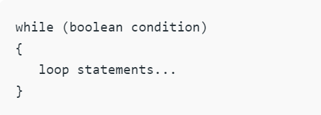
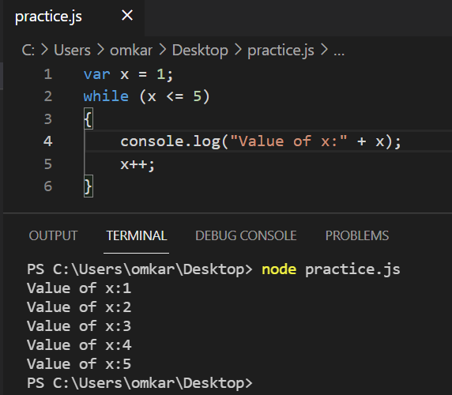
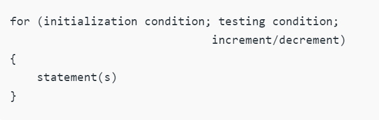
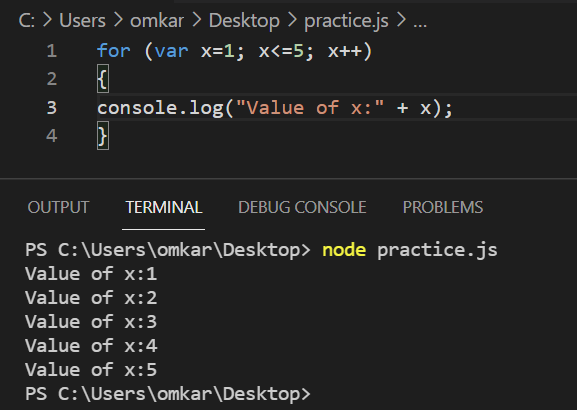
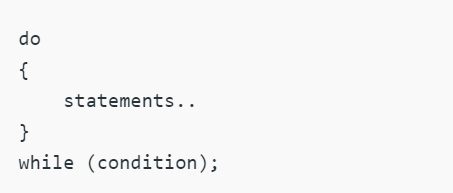
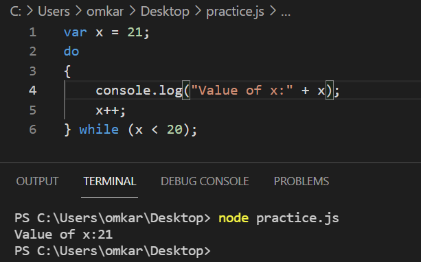

Hello everyone, in this blog we are going to discuss 3 types of loops in JavaScript. Loops execute the set of instructions repeatedly while some condition evaluates to be true. Loops actually reduces our work during programming because in looping we have to write code once and it will repeat until certain condition is reached
There are mainly three ways for executing the loops in JavaScript. They all have same functionality but only they differ in their syntax and condition checking time. Let us see about each one of these in details
It is a type of Entry Controlled loops where test condition is tested before entering the loop body. This loop will allows code to be executed repeatedly based on a given Boolean condition.
Syntax:
Code:
It is a type of Entry Controlled loops where test condition is tested before entering the loop body. This loop provides a brief way of writing the loop. The syntax of this for loop has the initialization, condition and increment/decrement which provides a shorter, easy to debug structure of looping.
Syntax:
Code:
It is a type of Exit Controlled loops where test condition is tested at the end of loop body as a result loop will execute atleast once, irrespective of whether the test condition is true or false.
Syntax:
Code:
I hope you liked this blog and learned something from it. Happy reading😊